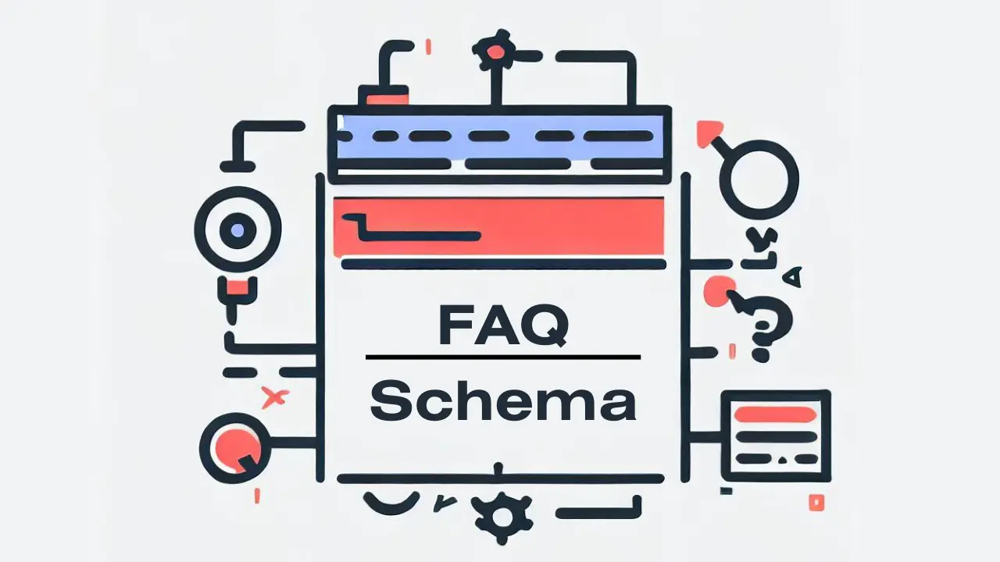

How to Use the FAQ Generator on ToolNinja
Welcome to ToolNinja's FAQ to JSON-LD Generator Guide! This user-friendly tool is designed to help you create structured FAQ content for your website effortlessly. Here's a comprehensive guide to make the most of this tool:

How To Add FAQs Schema On Blogger/Wordpress Website?
Step 1: Access the Tool
Open ToolNinja: Start by visiting ToolNinja's website and look for the "FAQ Generator" tool. You'll typically find it on the homepage or in the tools section.
Step 2: Prepare Your FAQs
- Locate the Text Area: On the tool's main page, you'll see a large box. This box is where you'll enter your Frequently Asked Questions (FAQs) and their corresponding answers. This is for refrence only. Pasting you text here will not generate the FAQs automatically.
- Enter Your FAQs: Click "Add FAQ" and start typing or paste your FAQs here. Remember that each FAQ should consist of two parts: the question and the answer. Be sure to separate each FAQ clearly.
Step 3: Adding/Deleting FAQs
- Click "Add FAQ":If you have more FAQs to include, simply click the "Add FAQ" button. This action will create a new section for you to add another question and its answer. You can create as many as you want but adding more than 10 FAQs is generally not recommended.
- Click "Delete Last FAQ":If you have added extra FAQs by mistake, simply click on "Delete Last FAQ" to delete it.
Step 4: Generate JSON-LD Code
- Generate JSON-LD: After you've entered all your FAQs, it's time to convert them into structured JSON-LD code. Click the "Generate JSON-LD" button on the tool's interface.
- Copy the JSON-LD Code: The JSON-LD code will appear in a box below the button. To copy it, click inside the box to select the code, then use your keyboard's copy command (Ctrl+C or right-click and select "Copy").
Step 5: Implement the Code
Now that you have your JSON-LD code, it's time to use it on your website:
- Go to Your Website: Navigate to the webpage where you want to add the structured FAQ content.
- Paste the Code: Find the appropriate section or page and paste the JSON-LD code you copied earlier. To paste, use your keyboard's paste command (Ctrl+V or right-click and select "Paste").
- Save or Update: Save your changes or update your webpage to apply the structured FAQ content.
Step 6: Test Your FAQs
- Validation Tools:It is essential to preview the page with the new structured FAQs to ensure they are working correctly. You can also use online structured data validation tools to check if your JSON-LD code is correctly formatted. If you see FAQ on test result page than it is working fine.
Congratulations! You've successfully used ToolNinja's FAQ to JSON-LD Generator to create structured FAQ content for your website. Now let's understand why we have added "Generate HTML" button.
How To Add Accordion Style FAQs On Blogger Website
In wordpress you can find so many plugins to add FAQs on your blog post but if you have hosted your website on blogger it is very difficult to add a beautiful FAQs.
To solve this problem we have added "Generate HTML" button. First of all look at this image below.
Image Source:cryptoglim.com
If you want to add the same FAQs to your blog post then first of all you have to add some css on you website. Now copy the below code below and follow the steps:
Step 1: Access Your Blogger Dashboard
Go to Blogger.com and log in to your account if you haven't already.
Step 2: Select Your Blog
Once you're logged in, you'll see a list of your blogs (if you have multiple). Click on the blog to which you want to add custom CSS.
Step 3: Access the Theme Editor
In your blog's dashboard, look for the "Theme" option in the left-hand menu. Click on it.
Step 4: Customize Theme
You'll be taken to the "Theme" section. Here, you'll see a preview of your blog's current theme. To customize the theme, click on the "Customize" button.
Step 5: Open the Advanced Settings
In the customization panel, you'll see various options for customizing your blog's appearance. To add custom CSS, scroll down and look for an option like "Advanced" or "Advanced Settings." Click on it to expand the advanced settings.
Step 6: Add Custom CSS
Within the advanced settings, you should find a field labeled "Add CSS." This is where you can enter your custom CSS code.
Step 7: Write Your Custom CSS
In the "Add CSS" field, you can now write or paste your custom CSS code that I have provided. You can use this space to add styles, change fonts, modify colors, and make other visual adjustments to your blog.
Step 8: Preview Your Changes
As you add your custom CSS, you'll likely want to preview the changes on your blog. Most Blogger themes provide a live preview so you can see how your blog will look with the new styles applied. But here you will see no changes because you have not written your FAQs yet.
Step 9: Save Your Changes
Once you're satisfied with your custom CSS changes, click the "Apply to Blog" or "Save" button. This will save your custom CSS and apply it to your blog.
Step 10: Edit or Remove Custom CSS (If Needed)
If you ever want to edit or remove your custom CSS, you can return to the same "Advanced Settings" section within the Blogger theme editor and make the necessary changes.
That's it! You've successfully added custom CSS to your Blogger website. This allows you to personalize your blog's appearance and style it according to your preferences without breaking your template.
Now let's understand how to add visual FAQs to your blog post.
How To Add Visually Apealing FAQs On Blogger's Blog Post?
If you have completed the all steps I have mentioned earlier in this article then there is nothing to do much. All you have to do is simply go to FAQ Generator Tool in my website, write your FAQs and click on Generate HTML button. Copy the generated code and paste it at the end of your blog post also don't forget to add heading before FAQs.
You are done now! Thank you for reading my article!